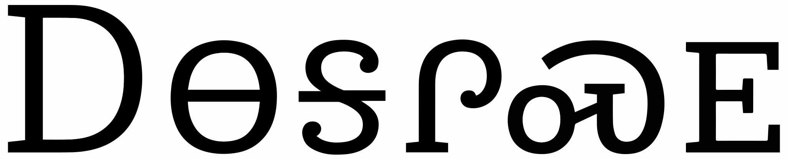

This page brings together basic information about the Cherokee script and its use for the Cherokee language. It aims to provide a brief, descriptive summary of the modern, printed orthography and typographic features, and to advise how to write Cherokee using Unicode.
It is remarkably difficult to find actual phonetic transcriptions of Cherokee words, and most so-called 'phonetic' transcriptions use one of the Latin orthographies, which also lack the more fine-grained distinctions needed to understand how to pronounce the text properly. Take, for example, the word for apple (ᏒᎦᏔ), which is written svgata in the Latin orthography, but is actually pronounced sə̃̌ːkʰtʰ. Therefore, the pronunciation information here and in the character notes is necessarily somewhat vague.
Source: Unicode UDHR, articles 1 & 2. Cased version generated by hand from that.
Usage & history
It is estimated that only around 2,000 Cherokee people speak the language. However, those who do speak the language use the script widely for writing letters, recipes, folktales, diaries, and for personal record-keeping. It is also used in some legal, governmental and religious documents and, in some areas, public signage. Efforts are being made to revive both the language and the script; to that end it is used in a limited capacity in education. Knowledge of the script is considered a prerequisite for full Cherokee citizenship.s
The script was developed by a Cherokee named Sequoyah and presented to the Cherokee Nation in 1821. It was popular and most Cherokee were literate in the script by 1828, when Sequoyah and Samuel Worcester reformed the orthography during the process of preparing it for printing.
From the 1870s to the early 1900s, the US government actively suppressed the Cherokee language and culture, sending children away from their parents and creating a generation that was unfamiliar with the language and script. The ultimate result of this policy is that the Cherokee language is now considered endangered to moribund. There are, however, efforts to increase usage, and users are able to use the language and script for social media on mobile devices.
Cherokee is a syllabary. Letters typically represent a combination of consonants and vowels. See the table to the right for a brief overview of features of modern Cherokee.
Cherokee text runs left to right in horizontal lines. Words are separated by spaces.
The script is becoming bicameral, after a long period when syllabic characters ressembled uppercase letters.
The Cherokee syllabary has 85 characters, of which 6 represent syllables that start with either no consonant or with ʔ(á ᡠᢠᣠᤠá¥), and one character represents the non-syllabic consonant sound s (á). The rest nominally represent a combination of consonant plus vowel, though the actual practise is a little more nuanced, and there is a degree of vagueness in the script when it comes to phonetically transcribing spoken sounds.d It is a simple syllabary where letter shapes don't follow any systematic pattern.
The script doesn't fully represent the sounds of the spoken language. Vowel length is not distinguished, with some exceptions syllable-final consonants and syllable-initial aspiration are not reflected in the orthography, and the user has to figure out when to drop the vowel of a CV letter to make consonant clusters. Some readers are beginning to use diacritics to indicate pronunciation more accurately.
The spoken language is tonal, but tones are not written. A set of diacritics exists, however, to enable linguists to indicate tones.
There is no standard spelling. The way a word is written may vary, according to the pronunciation of the writer, or choices they make for dealing with consonant clusters.
The visual forms of letters don't interact. There are no combining characters or diacritics, and ASCII digits are used.
Click on the sounds to reveal locations in this document where they are mentioned.
Phones in a lighter colour are non-native or allophones. Source Wikipedia.
Vowel sounds
Consonant sounds
labial
alveolar
post-
alveolar
palatal
velar
glottal
stop
ttʰ
kkʰ
ʔ
labialised stop
kw̥kʰw̥
affricate
t͡stʰ͡s
t͡ʃtʰ͡ʃ t͡lt͡ɬ
fricative
s ɬ
h
nasal
m
nn̥
approximant
ww̥
l
jj̥
trill/flap
Although some transcriptions suggest it, Cherokee doesn't contrast voiced vs. unvoiced stops and affricates; all are unvoiced. Instead, it contrasts aspirated and unaspirated formsma,34.
t͡s is pronounced t͡ʃ by some speakers. This also applies to the aspirated forms.
The glottal stop appears between vowels, and also sometimes between a vowel and a consonant, though less frequently. However, it is not written when using the syllabary, and so minimal pairs may be spelled the same, eg.
áªá¢á Ꮣ
Tone
Cherokee has 6 tones, 2 level and 4 contoured. They are shown in the table with Latin transcriptions used by Scancarelli (1986), Montgomery-Anderson (2008,2015), and Feeling (2003)/Uchihara (2016), respectivelyws,#Tone.
The level tones can appear with short or long vowels, but the others only occur with long vowels.
Tones are not marked in the Cherokee orthography, although this doesn't often create ambiguityws,#Tone. Nor are they used in the Latin orthographies, except in dictionaries. See also tones.
For the superhigh tone, Wikipedia says: The superhigh tone, also called "highfall" by Montgomery-Anderson, has a distinctive morphosyntactical function, primarily appearing on adjectives, nouns derived from verbs, and on subordinate verbs. It is mobile and falls on the rightmost long vowel. If the final short vowel is dropped and the superhigh tone becomes in word-final position, it is shortened and pronounced like a slightly higher final tone (notated as a̋ in most orthographies). There can only be one superhigh tone per word, constraint not shared by the other tones. For these reasons, this contour exhibits some accentual properties and has been referred to as an "accent" (or stress) in the literature.
Phonological processes
Cherokee, like many other North American languages, builds words into short phrases by adding prefixes and suffixes to the word root. A number of phonological changes are applied during this process. Typically, but not always, the result of these changes is captured by the orthography.
Vowel deletion
In certain circumstances, vowels in the underlying morphemic model are dropped when particles are added to a word root. The rule is as followsma,65:
t, k, j, w, y, n, kw, l + short vowel + h + plosive or vowel → removal of the short vowel and aspiration of the initial letter in the sequence
Three phrases: You're heading there, I'm heading there, and Are you already going?. The first experiences vowel deletion, the second not, the third does.
This phonological change is generally reflected in the orthography, however, the kʰ in the first example still uses a non-aspirated letter.
Metathesis
tbd
Syllables
Cherokee syllabic letters don't provide all the information needed to detect the underlying sounds if you are not familiar with the language. Features that are not generally expressed by the orthography include syllable-initial aspiration, syllable-final consonants, vowel length and unpronounced vowels, and tone. These are described in more detail below. Montgomery-Anderson lists the following possible sounds that are represented by Ꮩ: tò, tó, tòː, tóː, tǒː, tôː, tÈË, tőː, tòh, tóh, tòʔ, tóʔ,
tʰò, tʰó, tʰòː, tʰóː, tʰǒː, tʰôː, tʰȍː, tʰőː, tʰòh, tʰóh, tʰòʔ, tʰóʔ
The realisation of Cherokee sounds is also often affected by phonological rules that are determined by context – creating another step away from the sounds implied by the syllabic letters.
As mentioned in the introduction, it is difficult to find precise information about how Cherokee syllables and words are pronounced, so while we try to provide what phonetic information we can here, most of the transcriptions are in one of the rather imprecise Latin orthographies. There are also different versions of the Latin orthographies, some preferring to make a distinction between d and t, whereas others map to t and th.
The six vowel characters, when they appear at the start of a word represent plain vowel sounds. They may be short or long, and will be modified by tone, but none of those things are expressed by the orthography, eg. á á¹
Elsewhere they represent a syllable starting with ʔ,d eg. ᎯᎠ
Vowel length and tone
The vowel in a CV syllable doesn't distinguish between short and long vowel sounds, nor does it indicate tonal values, eg. the following sequence of Cherokee characters represents two different words, each having different lengths and tones (low vs. high, respectively)d:
á á¹
Because it is not followed by a vowel, this character can be used to form consonant clusters at the start of a syllabled, eg.
ᏍᎪᎯ
It is also used for syllables that end with an s sound, eg.
ᎯᏴᏫᏯᏍ
Some manuscripts precede syllables beginning with an s sound with this character. Sequoyah spelled his name like that, ie.
ᏍᏏᏉᏯs-si-quo-ya
Aspiration
Syllable initial aspiration
Most syllables can start with aspirated forms, but only 6 pairs of letters distinguish between aspirated and non-aspirated sounds in the onset.
Five pairs of characters make this distinction for stops or affricates: Ꭶ+Ꭷ, Ꮣ+Ꮤ, Ꮥ+Ꮦ, Ꮧ+Ꮨ, Ꮬ+á. For example, it is possible to distinguish between the first two syllables of ᎧᎦᎵ but notd,590 between the two meanings of
ᎪᎳ
Only one nasal syllable makes this distinction, ie. compare á¬á¾á¬á¿
However, the following could have two different meanings
á¬á‚á
The intrusive h
Aspiration can also arise when there is a non-written h sound in a syllable. Most syllables can have a coda with this sound, which then interacts with the sounds around it as morpheme prefixes and suffixes are attached to the base word. In some cases, it may produce transformations in other syllables.
The following 2 words illustrate non-written h sounds, the first in the syllable coda, and the second in the onset. á¤á‚á·á¨á á¨á¯
Vowel absence
Vowels at the end of a word
In spoken Cherokee, vowels at the end of a word are often dropped, although the orthography indicates what the vowel would have beenma,96. fig_eow_vowels shows an example based on Montgomery-Anderson of the pronunciation of the sentence: The hungry man ate all the good food.
Cherokee:Transcription:IPA:Meaning:
á áá¦á¯a-s-ga-yaà skà jman
ᎤᏲᏏᏍᎬu-yo-si-s-kvȕːyòːsÃËskhungry
ᏂᎦᏓni-ka-danìka̋ːtall
ᎤᏒᏅu-sv-nvȕːsə̃̀hn̥ə̃eat
ᎣᏍᏓo-s-daőːstgood
á áµáá“á´á™á—a-li-s-da-yv-do-diálstÈËhj̥tòhtifood
Phonetic transcription of a sentence where word-final vowels have been dropped from most words in pronunciation.
Additional vowel loss occurs as a result of phonological changes. See phonological_processes.
Final consonants
Each character may not only end with a vowel, but may also end with ʔ or h, eg. the following are written with just two characters
á‘á—á”áµ
There is one distinctive pair related to syllables ending with h, ie. compare:
ᎾnaᏀnah
Syllables that end with an s sound can be written using á, eg.
ᎯᏴᏫᏯᏍ
The exception is á, which is not followed by a vowel,d eg. ᏍᎪᎯ
ssV sequences
Some manuscripts precede syllables beginning with an s sound with á, and Sequoyah spelled his name like that, ie. ᏍᏏᏉᏯs-si-qo-ya
Tone marks
Spoken Cherokee has tones, but they are not shown in the text.u
Linguists who want to show tones do so using standard allocations of combining characters. The following list shows diacritics used to express tones. (Mid is the default, and doesn't need marking.)e,5
á Ì„â£á Ì‚â£á ÌŒâ£á Ì€â£á Ìâ£á Ì‹
Other features
Pronunciation-related diacritics
Everson reports that some combining diacritical marks are now used in Cherokee text by ordinary readers and especially children.e,5
These diacritics are in the Unicode Combining Diacritical Marks block. The Cherokee block has no combining characters.
̣␣̱␣̤␣̰
0323 indicates shifts in consonant readings – such as voiced to voiceless, voiceless to voiced; for example, where ᪠is ko, Ꭺ̣ would be kʰo.
0331 indicates the dropping of a vowel; for example, Oklahoma could be written
ᎣᎦ̱ᎳᎰᎹ
When a consonant is both shifted and has its vowel dropped, 0324 is used.
Nasalisation is only very rarely marked: in such cases, it can be indicated using 0330.
Numbers
Sequoyah, the inventor of the script, created a set of Cherokee numbers, but they were not adopted and are not encoded in Unicode.u The shapes of the numbers can be seen on the Omniglot page.
Text direction
Cherokee text runs left-to-right in horizontal lines.
There is no interaction between the glyphs in Cherokee.
Normally, there are no combining marks in Cherokee text. Such marks are only found in special cases, such as specialised educational or linguistic contexts.
Letterform slopes, weights, & italics
Cherokee users would like their fonts to have italic and bold styles, although this is not currently common. These alternate styles would be used in the same way as for the Latin script.e,5
Case & other character transforms
In 2015 a set of lowercase letters were added to version 8.0 of the Unicode repertoire, to complement the original set. This is discussed in more detail in cs.
Applications should provide for transformations between upper and lower case forms, however the situation is slightly unusual in that the pre-existing text is now written uppercase, and transforms need to in some cases treat lowercasing as the default operation. The following is from the Unicode Standard:
This exceptional introduction of a lowercase set to change a unicameral encoding into a bicameral encoding has important implications that implementers of the Cherokee script need to keep in mind. First, in order to preserve case folding stability, Cherokee case folds to the previously encoded uppercase letters, rather than to the newly encoded lowercase letters. This exceptional case folding behavior impacts identifiers, and so can trip up implementations if they are not prepared for it. Second, representation of cased Cherokee text requires using the new lowercase letters for most of the body text, instead of just changing a few initial letters to uppercase. That means that representation of traditional text such as the Cherokee New Testament requires substantial re-encoding of the text. Third, the fact that uppercase Cherokee still represents the default and is most widely supported in fonts means that input systems which are extended to support the new lowercase letters face unusual design choices.
Case
Lowercase characters were introduced in Unicode 8.0, to cover growing use of bicameral content in modern typesetting, as well as some older texts such as the Cherokee New Testament. The lowercase text above is likely to be displayed as tofu (boxes), since it is currently difficult to find a font that includes lowercase forms.
It is unusual for the majority of content to be in uppercase, and for lowercase to come in later, and implementers may need to take care in introducing the new characters. For example, Cherokee case-folds to uppercase, rather than lower. For more details see the Unicode Standard.u
The shapes of the upper- vs. lower-cased letters don't change radically (as they do in Latin or Cyrillic). The lowercase letters are often simply smaller, however they may have ascenders and descenders in some fontse,5.

Traditional uppercase text (top) and the newer mixed case text (bottom).details
Since there are no combining marks or decompositions in normal Cherokee text, grapheme clusters correspond to individual characters. Where combining marks are attached to letters, the combination of base and combining mark still fits within the definition of a grapheme cluster.
Grapheme clusters
Base (Mark?)
Each letter is a grapheme cluster, even if (rare) combining marks are attached.
Click on the text version of this word to see more detail about the composition.
Cherokee texts typically use quotation marks. Of course, due to keyboard design, quotations may also be surrounded by ASCII double and single quote marks.
start
end
initial
“
”
alternative
‘
’
Line & paragraph layout
Line breaking & hyphenation
By default, lines are broken at inter-word spaces. As in almost all writing systems, certain punctuation characters should not appear at the end or the start of a line.
Line-edge rules
As in almost all writing systems, certain punctuation characters should not appear at the end or the start of a line. The Unicode line-break properties help applications decide whether a character should appear at the start or end of a line.
The following list gives examples of typical behaviours for some of the characters used in Cherokee. Context may affect the behaviour of some of these and other characters.
Click/tap on the characters to show what they are.
“ ‘ ( should not be the last character on a line.
†’ ) . , ; ! ? % should not begin a new line.
Text alignment & justification
Justification is done, principally, by adjusting the space between words.
Baselines, line height, etc.
Cherokee uses the so-called 'alphabetic' baseline, which is the same as for Latin and many other scripts.
Cherokee character glyphs are generally the same height, and only rarely descend (a short way) below the baseline. There are no combining marks in normal text.
To give an approximate idea, fig_baselines compares Latin and Cherokee glyphs from a Noto font. The height of uppercase Cherokee letters is that of the Latin cap-height, and lowercase is set to the Latin x-height.
Font metrics for Latin text compared with Cherokee glyphs in the Noto Sans Cherokee font.
fig_baselines_other shows similar comparisons for the Galvji and Gadugi fonts.
Latin font metrics compared with Cherokee glyphs in the Galvji (top) and Gadugi (bottom) fonts.